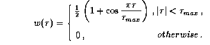

News
News
| Getting Started | Documentation | Glish | Learn More | Programming | Contact Us |
|
| VERSIONID |
News
|
Hanning smoothing function
hardware mount
HasA
heliocentric velocity system
Hermitian function
hexadecimal
histogram modification
Högbom CLEAN
holography
homology
horizon
host computer
hour angle
hour circle
HPBW
HSV
HTML
hue
hybrid mapping
hydrogen maser
hypertext
In the analysis of power spectra, a weight function w by which the measured correlation function is multiplied, in order to reduce that oscillation (Gibbs' phenomenon) in the computed spectrum which is due to having sampled at only a finite number of lags. w, as a function of lag, is given by

This is equivalent to convolving the discrete spectrum with the sequence (¼, ½, ¼).
Hanning smoothing sometimes is applied to the cross correlation measurements obtained in interferometric spectral line observing, to reduce the effect of sharp bandpass filter cutoffs. It also is used frequently in radio astronomical autocorrelation spectroscopy. For more on smoothing see R. B. Blackman and J. W. Tukey, The Measurement of Power Spectra, Dover, New York, 1958.
The combined acts of installing a computer external storage module, such as a disk pack or a magnetic tape, in some electro-mechanical unit (e.g., a disk drive or a tape drive) that provides computer access to this data storage medium, and placing that unit in readiness to be operated under computer control (e.g., positioning a magnetic tape at the beginning-of-tape marker). Compare software mount.
A term used when a class has another class embedded within it (aggregation), or associated with it (a reference or ``pointer'' relationship). Another relationship is IsA.
Velocity measured relative to the sun taken as the focus
of the earth's orbital motion (not relative to the solar system's
barycenter). Heliocentric and barycentric velocities will differ by
 0.012 km/s, so the distinction is
sometimes ignored.
0.012 km/s, so the distinction is
sometimes ignored.
A complex-valued function, of one or more real variables, whose real part is an even function and whose imaginary part is odd. The Fourier transform (FT) of a real-valued function is Hermitian, and the inverse FT of a Hermitian function is real.
In radio interferometry, each of the radio brightness distributions I(x,y), Q(x,y), U(x,y), and V(x,y) representing Stokes' parameters is real-valued. Their Fourier transforms, the Stokes' visibility functions, thus have the property of conjugate symmetry:
 ,
,
,
 , and
, and
 .
.
Numeration with a radix (base) of 16.
The histogram of pixel intensities in an image of a natural scene that has been linearly quantized is usually highly skewed toward darker levels. Detail is often imperceptible in the darker regions when such an image is viewed on a conventional display with only 8-bit pixels. Histogram modification can alleviate this problem by rescaling the original image so that the histogram of pixel intensities follows some preferred form. Histogram equalization flattens the output histogram, and may often be appropriate for astronomical images. Exponential and hyperbolic output histograms are also sometimes used, so that a final histogram "equalization" is performed (approximately) by the quasi-logarithmic response of the user's retina. For details, see for example W.K.Pratt, Digital Signal Processing, John Wiley and Sons (1978), p.311-318.
A deconvolution algorithm devised by Jan Högbom
[Aperture synthesis with a non-regular distribution of
interferometer baselines, Astron. Astrophys. Suppl. Ser.,
15 (1974) 417-426] for use in radio interferometry.
Denote (the discrete representations of) the dirty image by g and the
dirty beam by b. The algorithm iteratively constructs
discrete approximants f to a solution f of the equation b*f = g (* here
representing a convolution), starting with an initial approximant that
is zero everywhere. At the n'th iteration, one searches
for the peak in the residual image g - b*f.
to a solution f of the equation b*f = g (* here
representing a convolution), starting with an initial approximant that
is zero everywhere. At the n'th iteration, one searches
for the peak in the residual image g - b*f.
A  -function component, centered
at the location of the largest residual, and of amplitude m
(the loop gain) times the largest residual, is added to
f to yield f. The search over the residual image is restricted
to a region A termed the CLEAN window. The iteration terminates
with an approximate solution f
-function component, centered
at the location of the largest residual, and of amplitude m
(the loop gain) times the largest residual, is added to
f to yield f. The search over the residual image is restricted
to a region A termed the CLEAN window. The iteration terminates
with an approximate solution f either when N reaches some prescribed
iteration limit or when the peak residual (in absolute value) or the
r.m.s. residual decreases to some prescribed level.
either when N reaches some prescribed
iteration limit or when the peak residual (in absolute value) or the
r.m.s. residual decreases to some prescribed level.
To diminish any spurious high spatial frequency features in the
solution, f is
convolved with a narrow elliptical Gaussian function h,
termed the CLEAN beam. Generally
h is chosen by fitting to the central lobe of the
dirty beam.
Also, one generally adds the
final residual image g - b*f to the approximate solution f*h, in order to produce a
final result, termed the CLEAN image,
with a realistic-appearing level of noise.
In radio astronomy, a method for refining the feed and panel alignment, thus for improving the aperture efficiency or antenna gain of a radio telescope. By scanning an antenna's beam over a raster around an unresolved radio source, and using another antenna pointing at the same source as a reference, information is obtained about the amplitude and phase distributions of the signal reflected from the antenna surface. These distributions are used to specify corrections (if needed) for the focus and alignment of the feeds or of the positions of individual panels in the reflector.
The use of the principle of homologous deformation in the design of antenna structures. Any massive structure must deflect under its own weight. As the reflector of an antenna in a radio telescope must move relative to the direction of the gravitational force, the deflections must change as the antenna moves. An antenna is said to obey the principle of homologous deformation if the entire structure above the elevation bearings is designed to maintain the reflector in the shape of a paraboloid of revolution when pointing to any position between the zenith and the horizon. This can be achieved if the focal length of the paraboloid is allowed to change, and if the electrical axis of the paraboloid is allowed to move in a slightly different way than the elevation axis rotates. (These deviations can be compensated by moving the feeds.) When we achieve the result that the reflector surface retains the same geometrical shape to a certain precision at all elevation angles, changing only by a scale factor, the antenna is said to be homologous.
The plane perpendicular to the local vertical direction as defined by a plumb-line.
In the parasitic relationship of a computer program or program package, such as AIPS++, to the computer on which it runs, the latter is termed the host computer. Also, in the master-slave relationship of a computer to one of its peripheral devices, such as an array processor or coprocessor, the master may be termed the host.
The angle h, measured westward, between the meridian and the hour circle passing through a celestial source. The hour angle of an object depends both on time and the observer's location: it can be determined by subtracting the object's right ascension from the local sidereal time.
A great circle passing through the celestial poles, i.e. any circle that is perpendicular to the celestial equator.
For an antenna beam in any one dimension, the full width in angle between the directions at which the received or transmitted power falls to half of its maximum value. (Synonymous with the FWHM of the antenna's power pattern in this dimension.)
Hue, Saturation, Value: A system for describing the physical perception of color, in terms of tint, perceived narrowness of the spectrum, and intensity (here substituted for by "value"). See also chromaticity, RGB.
The HyperText Markup Language used to format hypertext documents for display by browsers compatible with the World-Wide-Web. Built on SGML. "Tags" consisting of a "<", a "directive", zero or more parameters and a ">" are embedded in the text. For details on HTML language standards, manuals, browsers and other tools, consult Alan Bridle's HTML Language and Resource Guide (http://aips2.nrao.edu/aips++/docs/html/htm4aips.html).
One of the three basic parameters (hue, intensity, and saturation) which may be used to describe the physical perception of the light that reaches one's eye. Hue, which is also termed tint, or simply color, refers to the dominant wavelength of the coloration, at a given location in an image or scene. The term also may be used to describe a multimodal color spectrum---e.g., one speaks of a purple hue. Different spectral distributions of light, of identical intensity and saturation, are capable of producing identical retinal responses; these unique responses comprise the set of perceptible hues.
Color matching tests have established that there are three basic types of human retinal receptors, whose peak responses are to red, green, and blue light. These are the three primary hues used in additive color mixing---e.g., in digital image display. They may be used to produce all, or virtually all, of the perceptible hues.
See also chromaticity, RGB.
An algorithm for calibrating radio interferometer data, essentially equivalent to the self-calibration algorithm, except in that it makes explicit use of the closure phase and closure amplitude relations, rather than of the relation
relating the observed visibility to the product of the true visibility and a pair of antenna/i.f. gains. Hybrid mapping, which is used extensively in VLBI data reduction, is described in A. C. S. Readhead et al., Mapping radio sources with uncalibrated visibility data, Nature, 285 (1980) 137-140.
Either algorithm (assuming that one cares to distinguish them) can be applied to data obtained with connected-element interferometers such as the VLA, ATCA or WSRT or with non-connected-element interferometers such as MERLIN and VLBI arrays. Any differences in the results produced by the two algorithms would be attributable primarily to differences in the effective weighting of the data. (In particular, early implementations of both algorithms discarded data which could have been used to obtain overdetermined solutions for the calibration parameters).
A device that produces a radio signal directly from the transition between the upper and lower hyperfine levels in the ground state of atomic hydrogen. The most stable type of frequency standard or clock (for time scales of a few seconds to few hours) that is used in VLBI observations. For details of the hydrogen maser that is used as a Master Clock by the U.S. Naval Observatory, see http://tycho.usno.navy.mil/maser.html.
A cluster of documents (or "nodes") containing cross-references or "links" which let a reader move easily from one document to another using an interactive browser.
You could now go back to the:
Copyright © 1995,1996,1999,2000 Associated Universities Inc., Washington, D.C.
abridle@nrao.edu, 26 August 1996, 17:30 EDT